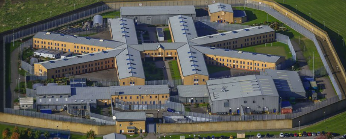
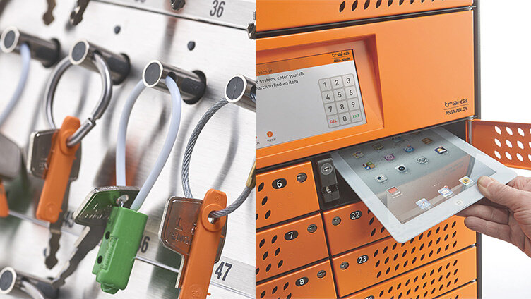
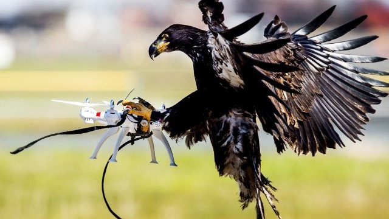

<!DOCTYPE html>
<html lang="en-gb">

</html>

<head>
    <link rel="stylesheet" href="css/bootstrap.css">
    <link rel="stylesheet" href="styles.css">
    <style>
        p {
            margin-top: 10px;
            margin-bottom: 10px;
            margin-right: 80px;
            margin-left: 80px;
        }

        ol {
            margin-top: 10px;
            margin-bottom: 10px;
            margin-right: 80px;
            margin-left: 80px;
        }

    </style>
</head>

<body class="site-content">
    <div class="bg-image no-gutters"></div>
    <nav class="navbar navbar-expand-lg navbar-light" style="background-color:#75bfea">
        <div class="container-fluid pl-5">
            <a class="navbar-brand" href="index.html">Home</a>
        </div>
        <a class="navbar-brand" href="Nathan.html">Nathan</a>
        <a class="navbar-brand" href="toby.html">Toby</a>
        <a class="navbar-brand" href="alex.html">Alex</a>

    </nav>
    <div class="container-fluid">
        <div class="row mt-5">
            <div class="col"></div>
            <div class="col-6 text-center main-content">
                <div class="my-5">
                    <h1 class="text-center">Computer science applications within custodial management:<span
                            style="display:block; height: 25px;"></span></h1>
                    
                    <h5 class="text-center"><span style="display:block; height: 40px;"></span>Computer science has
                        simultaneously made a large and surprisingly small impact within the world of custodial
                        management. Within this page I will be exploring the ways in which computer science has shaped
                        the way we manage our offenders, the ways we seek to rehabilitate them and those in which
                        computer science perhaps has more work to do.</h5>
                    <span style="display:block; height: 60px;"></span>
                    <h6>Computer science within security:</h6>
                    <p>Computer science within security has been applied in a wide range of methods ( with varying
                        degrees of effectiveness ) this has been done amongst everything from radio systems,
                        Closed-Circuit Television CCTV to systems for more secure management of sensitive equipment
                        within prisons like keys and tools.
                        <span style="display:block; height: 10px;"></span>
                        The Traka Key system is a <span Class="text-primary">Key</span> example of a system in which
                        computer science has benefited the custodial world, beforehand the management of keys within a
                        prison was a dedicated roll that would have to keep track of allocate and re collect possibly
                        thousands of sets of keys per day, with the margin for error being that a single missing key
                        could result in millions of expenses in relocking the entire establishment.
                        <span style="display:block; height: 10px;"></span>
                        The key system implements a secure storage that uses unique RFID tags on the key bunches. The
                        RFID’s are locked in place with a biometric reader being used to uniquely identify the user and
                        dispense the correct keys. Not only does this save on manpower but when combined with other
                        systems ( Ex. Electronic doors ) it can allow for the overall system to stop users from leaving
                        without first returning their keys.
                    </p>
                    
                    <p>Other methods in which computer science has been implemented within security systems involve
                        anti-drone measures. Within recent years drones have become increasingly problematic within the
                        custodial environment. Being used for a multitude of criminal activities. The difficulty becomes
                        when implementing anti drone measures to find an adequate compromise between restricting drones,
                        safety within the establishment and monetary limits. </p>
                    <p><span style="display:block; height: 5px;"></span>Examples of anti drone technology include:</p>
                    <ol start="1">
                        <li>Geofencing</li>
                        <li>Signal Jammers</li>
                        <li>Drone Detection</li>
                        <li>DJI drone specialised equipment</li>
                        <li>Net Guns</li>
                        <li>Counter Drones</li>
                        <li>Anti drone hawks</li>
                    </ol>
                    
                    <span style="display:block; height: 50px;"></span>

                    <h6>Computer science within rehabilitation:</h6>

                    <p>Within the rehabilitative efforts some of the most recent developments have been to use tech to
                        try and help keep inmates connected with the outside world in a controlled and supervised manor,
                        this includes automated allocation of visits, automated phone whitelists and even in one of the
                        most recent developments in britain, allowing prisoners to have access to tablets on which they
                        can apply for jobs within the walls or medical appointments. All in an effort to ensure they are
                        comfortable with this technology upon leaving as many of them may have been within the walls
                        long since it became widespread. </p>
                    <P><span style="display:block; height: 30px;"></span>It's my belief that the effects of computer
                        science within this industry are really in their infancy and the true extent of its applications
                        are yet to be fully realised. Theres plenty of room for improved detection of Contaband,
                        automation older systems and improved security capability. All whilst ensuring the men and women
                        within the walls are capable to acclimate upon rejoining society.</P>
                    <span style="display:block; height: 50px;"></span>

                    <h3 align="center" class=“text-center”>Page written by Nathan Scola</h3>
                </div>
            </div>
            <div class="col"></div>
        </div>
    </div>
    <script src="js/bootstrap.js"></script>
    <script src="js/jquery.slim.min.js"></script>
    <script src="js/jquery.backstretch.min.js"></script>
    <script>
        $("bg-image").backstretch()
    </script>
</body>

</html>